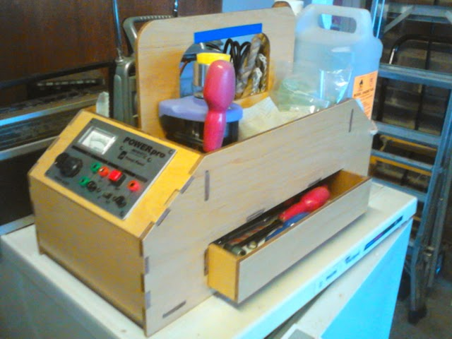

Radio Controlled Aircraft
These pages describe my journey in the realm of radio control aircraft. Before I retired I decided that I would resurrect a teenage hobby, or rather, continue from where I left off. I had built and flown control-line planes and free-flight planes, using only small (0.75cc and 1.5cc) diesel engines. At that time I had an ambition to build my own radio control equipment. But various things got in the way!
Over the intervening years the technology and model building techniques have moved on and so I thought it time to do a little research and jump the 48 years. When I was 16 I planned to build a single channel setup (rudder control only), that used a rubber-powered crank to turn from neutral, through left, neutral, right and back to neutral; one step for each press of the button.
Aeromodellers now have the choice of multi-channel control, with as much aerobatic capability as they want. However, my interests in aeromodelling are three fold. Firstly, I like building things and have a passing interest in aircraft, although I couldn't easily identify one from another. Secondly, building things is not restricted to mechanical devices, it includes electronics. My desire to build my own radio control equipment is still there. Finally, I like things that I have built to actually do something. Static models are not enough, so flying a model that I have built fits the bill.
So shortly before I retired I joined the Sussex Radio Flying Club. I live in the folds of the South Downs and on my way over the Downs I had often seen planes flying from a field on the summit. Now I fly from that field, weather permitting. However, the club also provides access to people with knowledge on most aspects of RC modelling and flying, and, most importantly, people who are prepared to spend hours at the flying site with you to train you and get you through your solo test.
I bought a 1.5m wingspan trainer from another club member, complete with OS40 glow engine and a 35MHz transmitter and receiver. It is about as simple as you can get, is stable, particularly in the blustery winds on the Downs, and is robust enough to survive my bumpy landings; mostly! In a nutshell, ideal for learning to fly and to help become an active member of the club. I can't say that I'm an accomplished flyer and I haven't yet progressed beyond taking off, performing various types of circuits and landing. In fact, after nearly a year I'm still shown up by youngsters who have better judgement of distance and better thumb control! Other members say that you just need to put in the hours, although it will be nice when I stop bending the nose wheel on heavy landings! Now that spring is finally here I might be able to get to the field more often, but that is usually no more than once a week. So, I've bought some RC simulator software to see if that will help.
At first I took the things that I needed at the flying site in two plastic boxes with handles on the top. I then spent longer than I had intended making a field box. I used 3-ply, but wish now that I had used 5-ply, since it needs to carry quite a weight. The design is my own, but is based on what you can buy from the model shop.
However, these pages are less concerned with my flying skills and my trainer and more a place to record my building activities, both RC equipment and aircraft. The links on the right will take you to my notes, which are as much for me to record what I'm doing as they are for others who may be interested in similar activities.